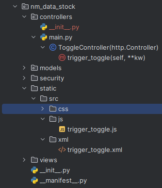

Today I want to introduce a solution for a usability-problem I had in Odoo recently. In Odoo 12 there is a lock button next to the edit / save button, and you have to click both to (1) unlock the page and (2) make it editable. This should be done in one step, effectively removing the locking mechanism used in the Delivery Orders (class StockPicking) and Manufacturing Orders (class MrpProduction). The solution requires an xml and a javascript-file as well as a dedicated web-controller. The soliution is presented below.

<?xml version="1.0" encoding="UTF-8"?>
<openerp>
<data>
<template id="assets_backend" name="trigger_toggle assets" inherit_id="web.assets_backend">
<xpath expr="." position="inside">
<script type="text/javascript" src="/nm_data_stock/static/src/js/trigger_toggle.js"/>
</xpath>
</template>
</data>
</openerp>
The code is pretty self-explanatory. We use the xml file to add the script. Dont forget to add it in the manifest-file. The javascript functions _onEdit and _onSave are functions from the core webclient (to be more precise web.FormController), and we add some simple url-parsing and an ajax-RPC-call to both functions.
odoo.define('nm_data_stock.trigger_toggle', function(require){
'use strict';
var ajax = require('web.ajax')
var FormController = require('web.FormController');
var triggerButton = FormController.include({
_onEdit: function () {
// wait for potential pending changes to be saved (done with widgets
// allowing to edit in readonly)
this.mutex.getUnlockedDef().then(this._setMode.bind(this, 'edit'));
const url = new URL(this.$el.context.baseURI)
const parsedHash = new URLSearchParams(url.hash.substring(1))
const id = parsedHash.get('id')
const model = parsedHash.get('model')
if (model.toString() == 'mrp.production' || model.toString() == 'stock.picking')
{
console.log('OnEdit '+ id + ' '+ model);
ajax.jsonRpc('/web/webclient/trigger_toggle', 'call', {'id': id,'model': model,'button_state': 'edit'} )
}
},
_onSave: function (ev) {
ev.stopPropagation(); // Prevent x2m lines to be auto-saved
var self = this;
this._disableButtons();
const url = new URL(this.$el.context.baseURI)
const parsedHash = new URLSearchParams(url.hash.substring(1))
const id = parsedHash.get('id')
const model = parsedHash.get('model')
if (model.toString() == 'mrp.production' || model.toString() == 'stock.picking')
{
console.log('OnSave '+ id + ' '+ model);
ajax.jsonRpc('/web/webclient/trigger_toggle', 'call', {'id': id, 'model': model,'button_state': 'save'} )
}
this.saveRecord().always(function () {
self._enableButtons();
});
},
})
})
Below is shown the webcontroller as endpoint for the ajax-RPC-call shown above…
controllers/main.py
from odoo import http
from odoo import api,fields
from urllib import parse
class ToggleController(http.Controller):
@http.route('/web/webclient/trigger_toggle', type='json', auth="none")
def trigger_toggle(self, **kw):
id = kw.get('id')
model = kw.get('model')
if model and id:
print(model)
obj = http.request.env[model].browse(int(id))
return obj.sudo().trigger_toggle(kw.get('button_state'))
Last but not least the implementation in the both classes.
models/stock.py
class StockPicking(models.Model):
"""Inherit class StockPicking from module stock."""
def trigger_toggle(self, state):
if state=='edit':
self.is_locked = False
if state=='save':
self.is_locked = True
class MrpProduction(models.Model):
"""Inherit class MrpProduction"""
def trigger_toggle(self, state):
if state=='edit':
self.is_locked = False
if state=='save':
self.is_locked = True